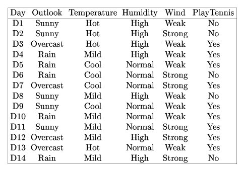

Day 3 - Supervised learning - Distance based methods
Posted on May 31, 2017
by Govind Gopakumar
Announcements
- Project groups : final
- Code to be uploaded by tonight
- Webpage - govg.github.io/acass
Recap
Mathematics
- Probability
- Statistics (probably not very well)
- Linear Algebra
- Optimization Theory
MLE modelling
How to assume a model, work out the loss/reward function, optimize it, and arrive at a final model.
Proximity Based Methods
What is the end goal?
Supervised learning
- Predict a class / value for new points
- “Train” using lots of old points, their labels
- Learn something meaningful
- Hopefully generalizes!
What’s the easiest way to assign a label/value?
Naive method of doing classification?
- Choose points which are nearby?
- Choose cluster which is nearby?
Formal “names”
- K-nearest Neighbors
- Distance from means
Our first classifier
Distance based classifier
Given Input
- N examples : training data
- N labels : training labels
- \(N_+, N_-\) respective number of points
What is the objective now?
- Some “model” that predicts for new data
- Accounts for more than 1 class?
Distance from means - I
Overview of model
- Compute center of each class / label
- Assign the new point to closest mean
- What does “training” mean now?
- What does “testing” mean now?
Coming up with our “decision function”
- \(\mu_+\) : positive mean
- \(\mu_-\) : negative mean
- \(f(x^{new}) = d(x^{new}, \mu_-) - d(x^{new}, \mu_+)\)
Distance from means - II
As similarity to training data
- \(\|x^{new} - \mu_- \|^2 - \|x^{new} - \mu_+ \|^2\)
- \(\langle \mu_+ - \mu_-, x^{new} \rangle + C\)
- Can be simplified into : \(f(x^{new}) = \sum \alpha_i \langle x_i, x^{new} \rangle + B\)
What does this mean?
Distance from means - III
Geometry of the decision function
- What does the boundary look like for this?
- What can it learn? What can’t it learn?
Drawbacks and strengths?
- Storage?
- Time taken?
- When can this be a bad method?
- When can this be good?
Distance from means - IV
Extending this
- Dealing with different kinds of features (weight, height)
- Dealing with different kinds of distances
- Adding a probability distribution to it!
K nearest neighbors
KNN - I
Overview of model
- Assign each point the class / value of its neighbor
- “K” - how many neighbors you account for
- What does “training” mean here?
- What would “testing” mean?
Geometry of the decision function
- What sort of boundary does this generate?
- How powerful can this be?
- The “distance” can always be measured in other forms!
KNN - II
Drawbacks and strengths?
- Storage?
- Time taken
- When can this be good or bad?
Things to consider for this model
- What happens if we have outliers?
- Where could this be an issue?
KNN - III
What is the optimal K?
- What happens if we increase K?
- Consider limit of K -> N?
- What’s the best choice then?
Extensions to KNN
- Can this be extended in the regression / labelling setting?
- Transformation of coordinates - How does that affect KNN?
Partition based methods
Why do we require better methods?
Geometry of the problem
- KNN, DfM suffers from scaling
- Our distance function must be chosen correctly
- Outlier can change a lot about the problem
Model implementation
- Require a very large amount of space (KNN)
- Is not space efficient
- Is not very powerful (DfM)
Solution? (Partitioning?)
Asking questions from data
Let’s classify oranges!
- You are given 1000 oranges
- What you know : color, weight, radius, number of spots
- What you want to know : is the orange good or bad?
Natural human thought?
- Ask questions of the data
- Does this approach scale?
- How do we make this more abstract?
Decision Trees - I
Model overview
- Defined by a set of rules, in a tree form
- Each node checks some feature
- We don’t need it to be binary
- At the leaf, we can do classification
Geometry of the problem
- What is the decision boundary this forms?
- How does this look in higher dimensions?
Decision Trees - II
How do we ask the right questions?
- Which features are informative?
- Which features are useless?
- Variance, Entropy?
How useful is a feature for us?
- Do we need to know how it varies?
- Do we need to see how it relates to class?
Decision Trees - III
Entropy to measure utility
- Entropy : \(-\sum p_i \log{p_i}\)
- Information Gain : \(H - H_f\)
How does this help us?
- Choose feature with highest “Information Gain”
- How do we compute this?
Decision Trees - IV
Playing Tennis

Decision Trees - V
Computing IG for features
- Let us compute IG for Wind
- If we choose Wind, we get two splits (Weak, Strong)
- First split will have {2-, 6+}
- Second split will have {3+, 3-}
Values
- Entropy for first : 0.81125
- Entropy for second : 1
- Total weighted entropy : 0.892
- IG : 0.94 - 0.892 = 0.048
Decision Trees - VI
IG for all features
- Outlook : 0.246
- Humidity : 0.151
- Wind : 0.048
- Temperature : 0.029
Choosing features?
- Best : Outlook
- Worst : Temperature
Decision Trees - VII
For real valued features?
- Choose a value which gets best IG
- How efficient is this?
- How much time would this take?
Extending this
- Random forests!
- Use the power of randomness
Conclusion
Concluding Remarks
Takeaways
- Three different classifiers, each exploiting geometry
- Issues with such methods
- Importance of space, time when doing ML
- How human intuition leads to natural models
Announcements
- Programming “Assignment” will be up hopefully tonight
- Sample code for all the classifiers taught so far
- Quiz 1 will be uploaded tomorrow night